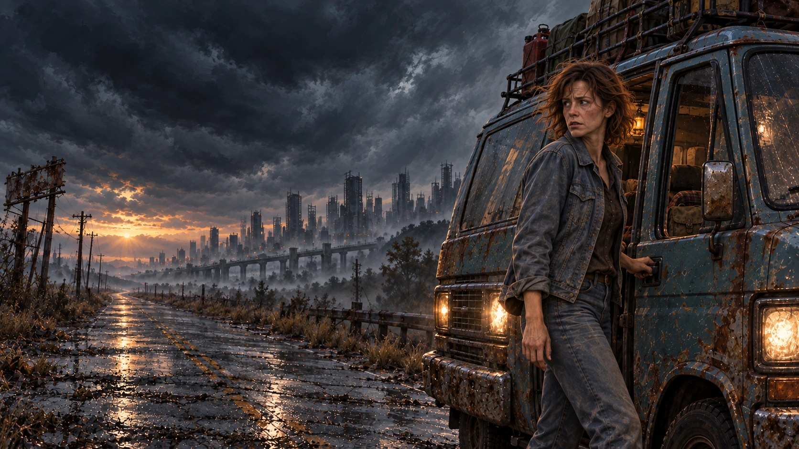
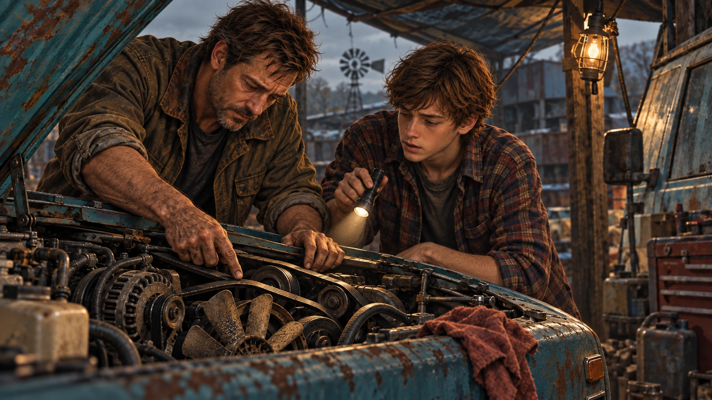

NAME CHOSEN. VISUAL IDENTITY IN DEVELOPMENT.
Signals End.
A modern trail.
Five contemporary title treatments and abstract marks. Distinctive letterforms, a strong silhouette and a subtle echo of Oregon Trail.
Each sheet includes custom title lettering, an abstract mark derived from the letters, and a short type specimen. These are visual concepts; production font files and vector masters follow the final selection.
TITLE SCREEN STUDY
See it on the road.
Tap the artwork to inspect the lettering at full size.
THE COMPLETE SET
Five modern directions.
THE WORLD BEHIND THE MARK
Uneasy miles. Something worth reaching.
The identity needs to sit beside these existing game images: vigilance, curiosity and a machine someone still knows how to fix.


AFTER WE CHOOSE THE DIRECTION
One complete brand kit.
The selected identity will become primary and compact wordmarks, a standalone logo and app icon, custom display-font files, a readable interface type system, color and spacing rules, title-screen and store artwork, and templates using the established family, van and landscape assets.
The name is Signals End, without an apostrophe. No visual direction has been selected yet.